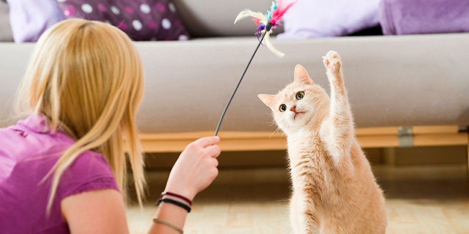
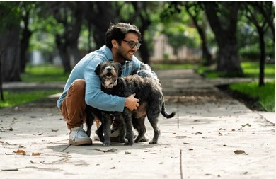

El cuidado de las mascotas


Quienes tenemos mascotas, sabemos que son parte importante de nuestras vidas. Requieren de nuestros cuidados para mantenerse saludables y felices, y a cambio nos brindan su amor incondicional. Cuidarlas implica proporcionales una buena alimentación, atención veterinaria y mucho cariño. Pasear a nuestro perro o jugar con nuestro gato los mantiene activos y fortalece el vinculo que existe con nuestra mascota.